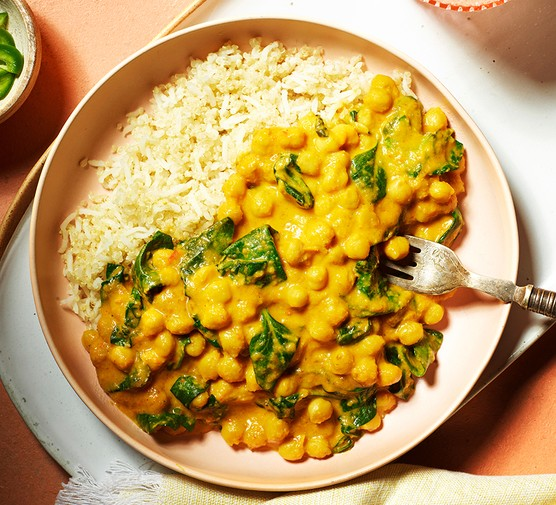

Chickpea and Spinach Curry

Description
A vegetarian dish full of aromatic spices and a creamy teture thanks to coconut milk. It is nutritipus, healthy,
and prepared in a single pot.
Ingredients:
- 2 can of cooked chickpeas.
- 400 ml coconut milk.
- 200 g fresh spinach.
- 1 tablespoon curry powder.
- 1 piece of grate ginger
- Basmati rice of serving.
Steps:
- Aromatic Base: Sauté ginger and garlic in a pot. Add the curry powder to release its aroma
- Stewing: Pour in the chickpeas (drained) and the coconut milk. Cook over medium heat for 10 minutes.
- Greens: Stir in the spinach at the end and cook until wilted from the resiual heat.
- Serving: Serve hot over a bed of freshly made basmati rice